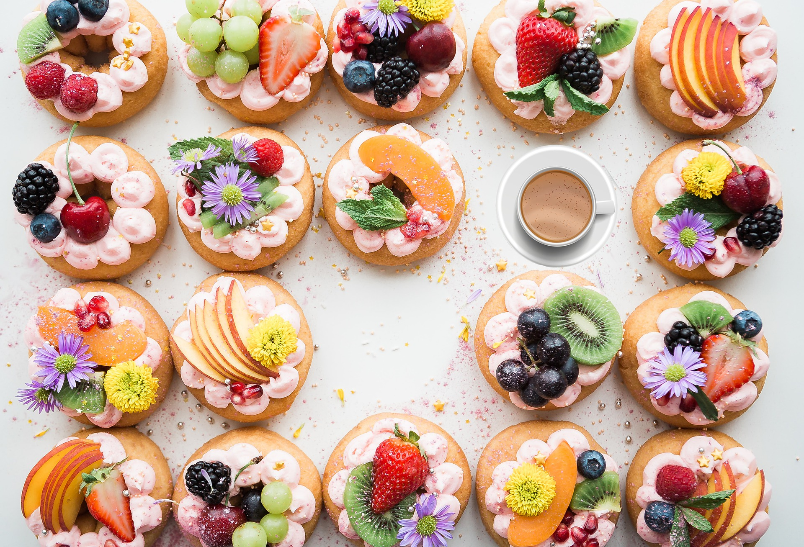

| Cake 1 🍰 |
| Cake 2 🍩 |
| Cake 3 🍭 |
| Cake 4 🎂 |
|
|  |
| Cake Art by James |
| We deliver both cakes and arts to you! |
|
|
About us
Cake Art by James was founded by Anthonie James Domingo. James began his studies with a focus on visual arts and design since high school.
He obtained professional cooking diploma from St Pius Culinary Institute, Montreal, Canada.
With his strong interest in pastry and cake decoration, he continued to refine his skills at the Pearson School of Culinary Arts (PSCA),
which was mentioned in Maclean's magazine as 2017 one of the best culinary schools in Canada.
He worked in pastries since the age of 22 and has combined his skills with his creative passion to create delicious works of art.
|
|